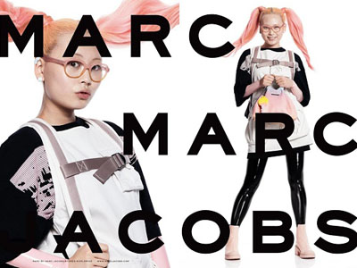

홈 > 브랜드 매거진 > 마크 제이콥스
마크 제이콥스
마크 제이콥스(Marc Jacobs)는 1963년 뉴욕에서 태어난 미국 패션 디자이너이자 그의 이름을 딴 동명 브랜드다. 그는 1997~2014년 루이 비통의 크리에이티브 디렉터로도 활동했다.
산업 분야 패션·럭셔리 · 공개 등급 자료 기반 · 브랜드 평가 4.3 ★

한눈에 보는 브랜드
마크 제이콥스(Marc Jacobs)는 1963년 뉴욕에서 태어난 미국 패션 디자이너이자 그의 이름을 딴 동명 브랜드다. 그는 오랜 사업 파트너 로버트 더피(Robert Duffy)와 함께 자신의 레이블을 출범시켰으며, 1997~2014년 루이 비통의 크리에이티브 디렉터로 활동하며 이 메종의 첫 기성복 라인을 만들었다.
세컨드 라인 'Marc by Marc Jacobs'는 2001년 출시되어 2015년 종료되었고, 2019년에는 아카이브를 재해석한 'The Marc Jacobs' 라인을 선보였다.
브랜드 관점
마크 제이콥스는 1984년 디자이너 마크 제이콥스가 로버트 더피와 함께 설립했고 1997년 LVMH가 지분 다수를 확보하면서 자본력을 갖췄다. 창업자 본인이 1997년부터 2013년까지 16년간 루이비통 아트디렉터를 겸임하며 무명에 가깝던 루이비통 기성복 라인을 현대화한 경력이 브랜드 서사의 핵심이다.
에르메스나 셀린느 같은 정통 가죽 명품과 달리, 적정가의 디자이너 럭셔리를 표방하며 젊은 층을 겨냥한다. 2020년 9월에는 성별 경계를 허무는 헤븐(Heaven) 라인을 별도로 띄워 Z세대와 스트리트 감성을 흡수했다.
2026년 LVMH가 브랜드를 WHP 글로벌에 약 1조원 안팎으로 매각하면서 지난 30년 가까운 동거를 끝낸 점이 최근 가장 큰 변화다. 한국에서는 더 토트백이 20~30대 데일리백으로 널리 소비되며, 크림·SSG·롯데온 등 주요 플랫폼에 폭넓게 유통된다.
시작과 성장
1984년 의류 브랜드 마크 제이콥스(Marc Jacobs)는 미국의 패션 디자이너 마크 제이콥스의 혁신적인 컬렉션과 함께 탄생했다. 마크 제이콥스는 진보적이고 실험적인 디자인을 추구하여 당시 저항적인 스타일 '그런지 룩'을 만들었으며 현대적이고 세련된 감각으로 패션 비즈니스의 영역을 넓혀가고 있다.
브랜드 아이덴티티
브랜드의 핵심 식별자는 넓은 자간으로 트래킹된 대문자 워드마크로, 커스터마이즈된 엔그레이버스 고딕(Engravers Gothic) 계열 서체를 기반으로 한 흑백 구성을 특징으로 한다. 이 로고타입은 1980년대 초 등장 이래 본질적으로 거의 변하지 않은 채 유지되어 왔으며, 뉴욕의 아트 디렉터 피터 마일스(Peter Miles)가 로고·패키징·광고 캠페인 작업에 관여한 것으로 기록된다.
2022년에는 뉴욕 스튜디오 트리보로(Triboro)가 리브랜딩을 진행해 절제된 워드마크를 강렬한 타이포그래피 패턴으로 확장하고 밝은 옐로를 보조 강조색으로 도입했다.
제품과 서비스
핸드백이 매출의 중심으로, 캔버스 소재의 더 토트백(The Tote Bag), 클래식 카메라백을 재해석한 더 스냅샷(The Snapshot), 더 색백(The Sack Bag) 등이 시그니처다. 한국에서 더 토트백은 미니부터 라지까지 대략 16만원대에서 45만원대까지 가격대를 형성한다.
향수에서는 데이지(Daisy)와 그 파생 라인인 데이지 드림·데이지 와일드, 그리고 퍼펙트(Perfect)가 대표 베스트셀러다. 별도 브랜드인 헤븐(Heaven) 라인은 나일론 토트와 그래픽 의류로 젊은 층을 공략한다.
현재 상태
2026년 5월 LVMH는 마크 제이콥스 브랜드를 WHP 글로벌과 G-III 어패럴 그룹의 합작법인에 매각하는 계약을 체결했으며, 거래는 2026년 말 완료 예정이고 마크 제이콥스 본인은 크리에이티브 디렉터로 유임된다.
타임라인
BI/CI 변천사
함께 읽을 브랜드
Au
Aurlands
패션·럭셔리 · 편집 검수AurlandsAurlands는 2019년에 기록된 Fashion 계열의 브랜드 아이덴티티 사례입니다. Heydays가 아이덴티티 작업의 디자이너로 기록되어 있습니다. 공개 섹션...
패션·럭셔리 · 편집 검수EspritEsprit는 1978년에 기록된 Fashion 계열의 브랜드 아이덴티티 사례입니다. John Casado, Tamotsu Yagi가 아이덴티티 작업의 디자이너로 기...
 패션·럭셔리 · 편집 검수Fenty
패션·럭셔리 · 편집 검수FentyFenty는 2019년에 기록된 Fashion 계열의 브랜드 아이덴티티 사례입니다. Commission가 아이덴티티 작업의 디자이너로 기록되어 있습니다. 공개 섹션...
Sa
Sarah & Sebastian
패션·럭셔리 · 편집 검수Sarah & SebastianSarah & Sebastian는 2025년에 기록된 Fashion 계열의 브랜드 아이덴티티 사례입니다. Made Thought가 아이덴티티 작업의 디자이너로 기록되...
Mi
Miles
헬스·제약 · 편집 검수MilesMiles는 2023년에 기록된 Health & Wellbeing 계열의 브랜드 아이덴티티 사례입니다. Buddy buddy가 아이덴티티 작업의 디자이너로 기록되어...
 패션·럭셔리 · 매거진 완성루이비통
패션·럭셔리 · 매거진 완성루이비통루이비통은 여행가방에서 출발했지만, 이동의 기능을 럭셔리한 삶의 상징으로 확장했다. 브랜드의 헤리티지는 물건을 담는 도구가 아니라 이동하는 사람의 취향과 지위를 표현...
Th
The Practical Man
패션·럭셔리 · 편집 검수The Practical ManThe Practical Man는 2015년에 기록된 Fashion 계열의 브랜드 아이덴티티 사례입니다. Garbett가 아이덴티티 작업의 디자이너로 기록되어 있습니...
에르메스는 속도보다 장인성과 기다림의 가치를 브랜드 경험으로 만든다. 제품은 희소성과 품질을 통해 욕망을 만들지만, 더 깊은 차별성은 쉽게 대체되지 않는 제작 태도와...